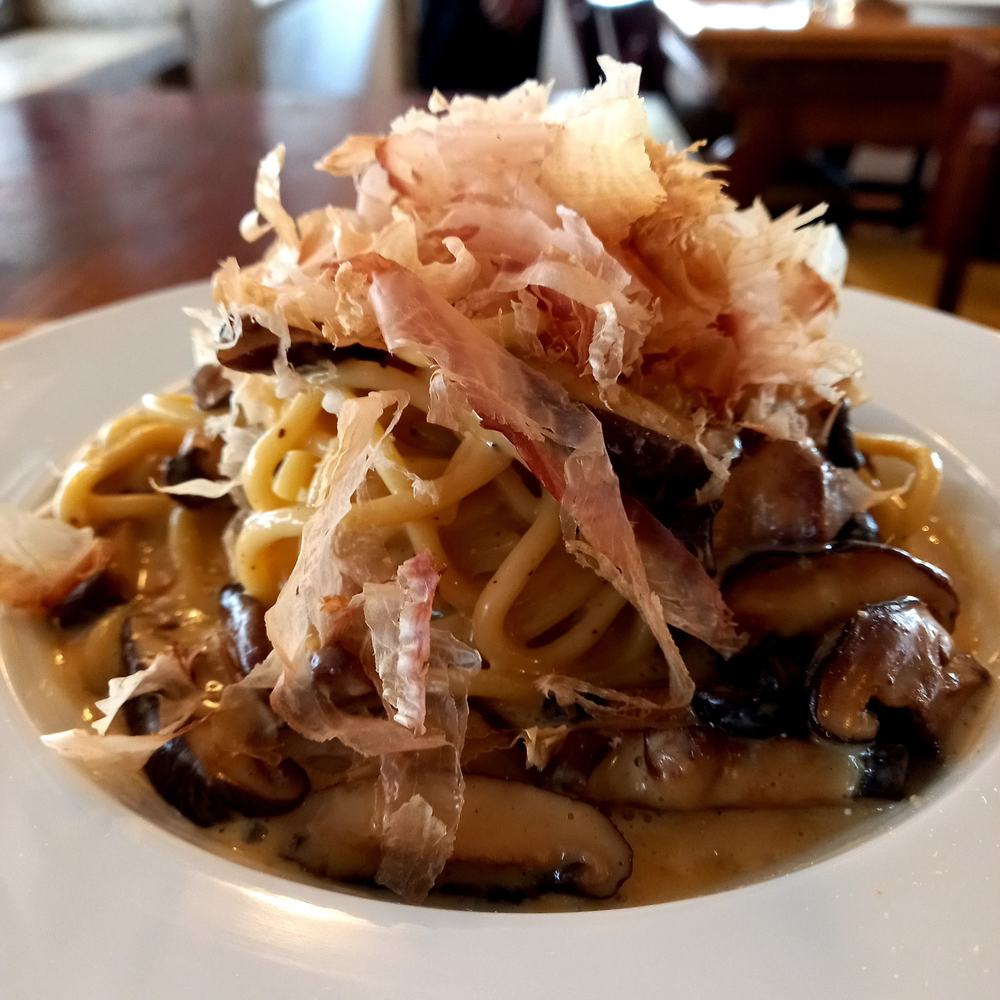
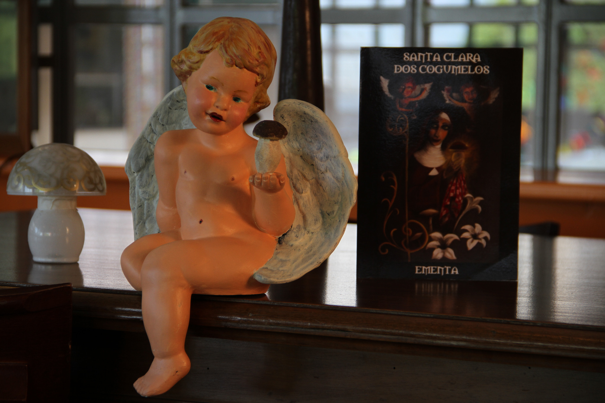
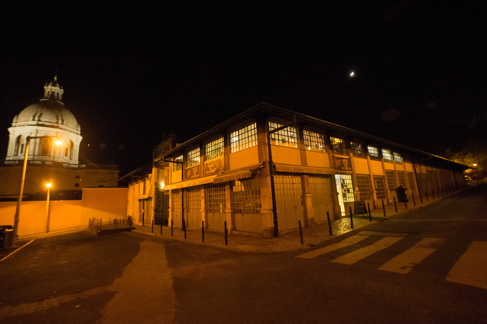

Couvert SC/DC
14 €Curiosidades de cogumelos e cestinho de pão.

Mercado de Santa Clara · Lisboa
Cogumelos silvestres e cultivados. Tradição italiana, liberdade portuguesa e uma vista sobre o Tejo.
Em exibição desde 2013 01
Cogumelos & Rock’n’Roll
Desde 2013, todos os pratos — do couvert à sobremesa — giram à volta dos cogumelos: silvestres ou cultivados, frescos ou desidratados.
A cozinha tem raízes italianas, mas não só. Trabalhamos cada espécie com curiosidade, técnica e o respeito que merece.
“Não fazemos comida com cogumelos. Fazemos dos cogumelos a razão da comida.”

Dentro da história

Venha à mesa
Terça a sexta
19:30–23:00
Sábado
13:00–15:30 · 19:30–23:00